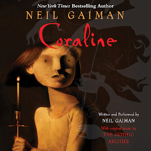
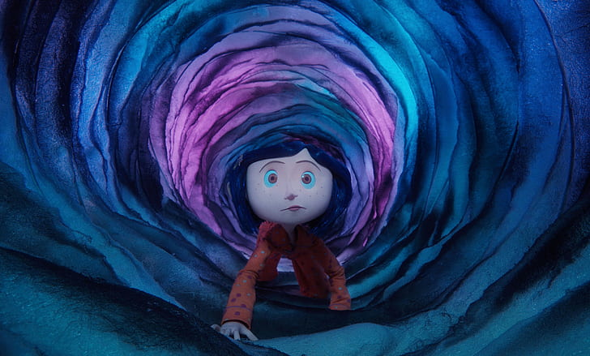

Sobre o Filme:
Baseado no livro "Coraline" de Neil Gaiman, lançado em 2002
A animação em stop-motion mistura elementos de terror, fantasia e aventura, e atrai tanto o público infantil como o adulto. A produção traz mensagens sobre a relação entre pais e filhos(a), além de mostrar como o ideal de mundo perfeito não significa que ele é uma fonte de felicidade.
Sinopse:
Enquanto explora sua nova casa à noite, a pequena Coraline descobre uma porta secreta que contém um mundo parecido com o dela, porém melhor em muitas maneiras. Todos têm botões no lugar dos olhos, os pais são carinhosos e os sonhos de Coraline viram realidade por lá. Ela se encanta com essa descoberta, mas logo percebe que segredos estranhos estão em ação: uma outra mãe e o resto de sua família tentam mantê-la eternamente nesse mundo paralelo.
Por que assistir Coraline?
- Nota 7,8 no IMDb
- Prêmio AFI: Melhor Filme do Ano (2009)
- Filme de 1h 40min
Críticas do filme:
"Além da parte técnica impecável, "Coraline" conta com uma narrativa intrigante e envolvente, que mescla elementos de conto de fadas com um tom sombrio e surreal. A protagonista, Coraline, é uma personagem cativante e complexa, cuja jornada de autodescoberta e coragem ressoa com o público de todas as idades."